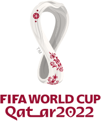

O Catar decidiu apresentar a sua candidatura apenas para 2022. Com apenas 1,6 milhão de habitantes,
o país pretendeu ser a primeira nação do Oriente Médio a receber tal competição, tentando aproximar os mundos ocidentais e orientais.
Uma das preocupações da candidatura foram as temperaturas muito elevadas que se registram naquele país.
A Copa do Mundo sempre foi realizada entre junho e julho, exatamente o período de recesso das ligas europeias.
Nesse período de tempo, as temperaturas ultrapassam facilmente os 40 graus celsius, nunca baixando para menos de 30 graus celsius.
O sheik Mohammed bin Hamad bin Khalifa al-Thani, autoridade responsável pela candidatura de 2022, afirmou que está em curso a introdução
de uma tecnologia dentro dos estádios de modo a conseguir baixar as temperaturas em cerca de 20 graus celsius
País anfitrião: 1 (Qatar)
UEFA (Europa): 13 representantes
Conmebol (América do Sul): 4 ou 5 representantes*
Concacaf (América Central e do Norte): 3 ou 5 representantes*
CAF (África): 5 representantes
AFC (Ásia): 4 ou 5 representantes*
OFC (Oceania): nenhum ou um representante*